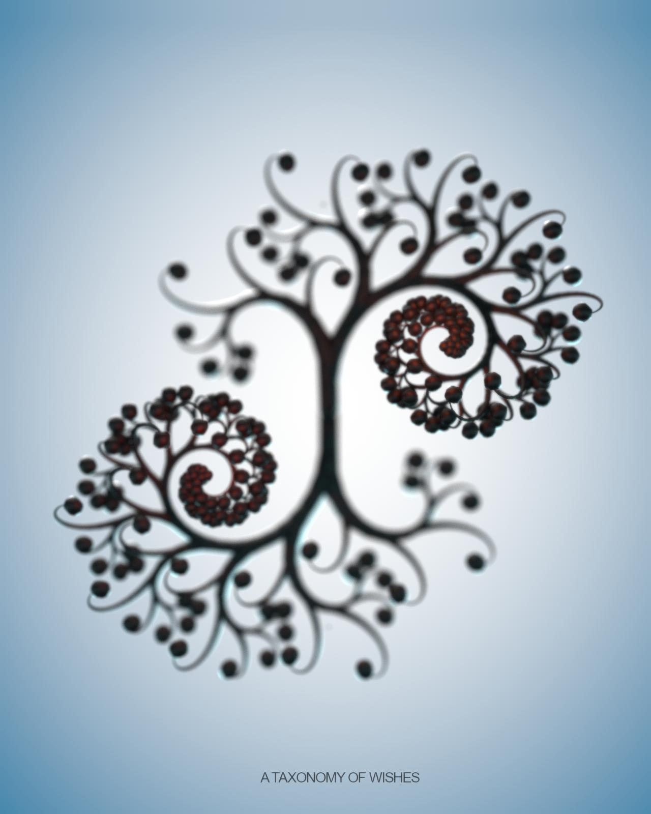

A Taxonomy of Wishes FAQ

Q. What is "A Taxonomy of Wishes"?
A. "A Taxonomy of Wishes" is the umbrella name for a series of projects that sprung from my work with branching, recursive systems written in Javascript and using the library, threejs. The name suggests a process of finding and naming desires and intentions.
Q. Tell me about the projection.
A. The projection is called {Medusa,Medusa,...} and is inspired by the immortal jellyfish. The piece is a sound reactive, real-time rendering of a jellyfish made of human bones. It is an exploration of the desire for immortality and was developed with much help from Marina Zurkow in the class, "Project Development Studio".
Q. Tell me about the Makerbot (an inexpensive open source 3D printer) prints.
A. The Makerbot prints (which are built from layers of extruded plastic) were built using a tool I wrote called "G-Code Painter". This tool uses an oscillating "brush" to draw cross sections that are converting directly into g-code (the language of plotting devices and cnc machines) for printing on the Makerbot.
Q. Tell me about the SLS (selective laser sintering) prints.
A. SLS is a technique that fuses nylon with lasers. One of its big advantages over the Makerbot is that you don't need to build support structures, leaving much more freedom in the design process. The SLS prints were created using the modeling tool"Turbine" which I wrote in Daniel Shiffman's class, "The Nature of Code".
Q. Who are you, what's your background?
A. I have a background in animation. I've worked in a wide variety of media over the course of my career. My efforts at ITP so far have mostly involved learning to program graphics while seeking new outlets for my work. I believe that great bursts of creativity accompany advances in technology. I think that new media technology as an art form is undergoing a renaissance after a fifteen year break and I'm excited to be a part of it. I believe this project has something fundamental and true at its core and I inend to plumb its depths.
idlehands.tv//dlobser.com
davidlobser@gmail.com
646-645-1782